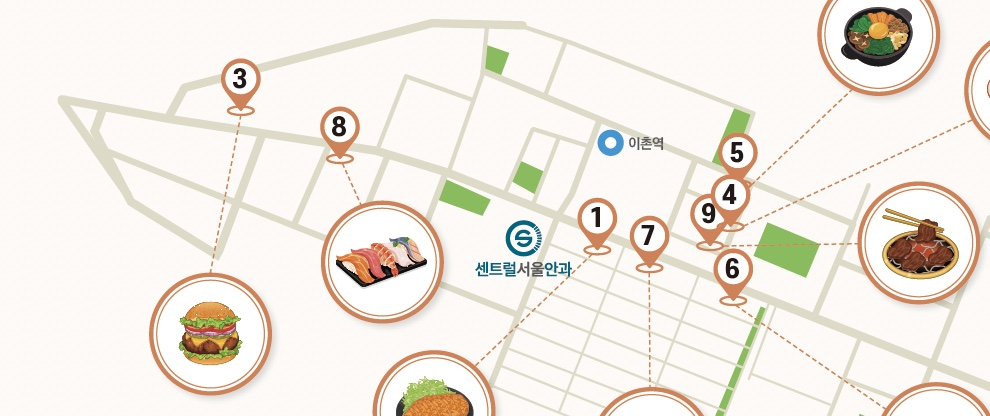

센트럴서울안과가 위치한 서울 용산구 이촌동은 주민들의 일상이 되어주는 공간과 외부인을 모으는 공간들이 하나 되어 정감 있으면서 또 이색적인 분위기를 형성한다. ‘금강산도 식후경’이라고 했다. 이촌동 여행을 나서든, 병원 진료를 앞두고 있든 든든한 것이 최고다. 센트럴서울안과 구성원들이 추천하는 이촌동 ‘맛’ 로드로 떠나보자.

1 모모야
이촌동 터줏대감으로 자리 잡은 일본식 돈가스 맛집! 겉은 바삭하고 속은 촉촉한 돈가스와 함께 제공되는 샐러드 소스는 직접 과일을 갈아 만든 것으로, 모모야만의 맛이다.
2 동빙고
이촌동에만 두 개의 매장이 있는 서울 3대 팥빙수. 얼음, 우유, 연유, 팥, 떡 조합으로 ‘팥빙수의 기본’을 고수하지만 맛은 그 이상이다. 팥을 젓지 않고 삶아 알알이 살아있는 팥과 우유·연유를 함께 끓여 만든 시럽이 특징. 단, 대기는 필수.
3 솜씨 이촌
정갈하고 건강한 한정식 한 상을 맛보고 싶다면 주저 말고 방문할 수 있는 곳이다.
4 르번미
메뉴 테스트만 일 년을 하고 오픈한 베트남 음식점으로, 자극적이지 않고 균형 잡힌 맛으로 사랑받는다. 토마토가 들어간 쌀국수 ‘분레’는 해산물로 끓인 시원한 육수와 토마토의 새콤함이 어우러진다. 이촌동 매장이 본점.
5 헬카페 스피리터스
낮에는 커피, 밤에는 칵테일을 즐길 수 있는 커피 맛집. 우드톤 인테리어로 혼자 독서하거나 사색에 빠지기 좋은 공간이다. 클래식 카푸치노, 헬라떼, 티라미수 추천.
6 브루클린 더 버거 조인트 동부이촌점
국내 수제버거 유행을 이끈 브랜드. 매일 직접 갈아 만드는 100% 소고기 패티가 여러 재료와 어우러져 맛의 하모니를 선사한다. ‘브루클린 웍스’가 인기.
7 카페 멜랑
모던하고 깔끔한 브런치 맛집. 다양한 메뉴에 음식과 플레이팅 궁합이 훌륭하다.
8 이촌 횟집
이촌동 골목 숨은 맛집! 초밥부터 매운탕, 싱싱한 회까지 만날 수 있다. 매운탕 1인 주문 가능, 고등어구이 추천.
9 솔낭구
인생 갈비를 맛볼 수 있는 고기 맛집. 차돌박이 듬뿍 들어간 된장찌개와 집밥 같은 밑반찬도 일품이다.
2023년 12월 오프라인판 기준 정보입니다. 주소·전화번호는 원본 지면 확인 후 입력하세요.